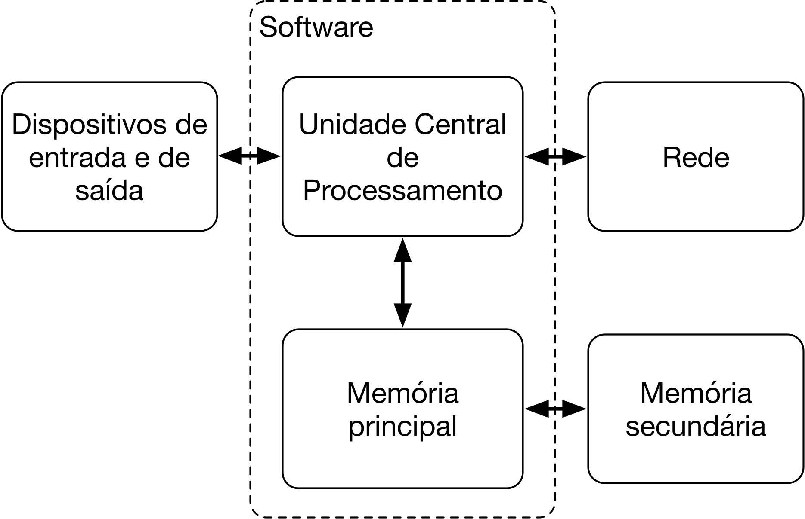

Por que você deve aprender a escrever programas?¶
Escrever programas (ou programar) é uma atividade muito criativa e recompensadora. Você pode escrever programas por muitas razões, que variam desde ganhar dinheiro resolvendo problemas complexos de análise de dados, até simplesmente se divertir ajudando alguém a resolver um problema. As páginas que compõem este site assume que todos precisam aprender a programar, e uma vez que você tenha aprendido, cabe a você decidir o que fazer com as suas novas habilidades.
Estamos cercados, no nosso dia-a-dia, por computadores que variam de laptops a telefones celulares. Podemos pensar nesses computadores como nossos assistentes pessoais, capazes de resolver vários problemas para nós. O hardware em nossos computadores atuais foi construído para, basicamente, perguntar de forma contínua: "o que eu devo fazer agora?".
Os programadores adicionam um sistema operacional e um conjunto de aplicações ao hardware e acabam com um assistente pessoal que é suficientemente útil e capaz de ajudar-nos a fazer várias coisas diferentes.
Nossos computadores são rápidos e possuem uma grande quantidade de memória, podendo ser realmente úteis para nós se soubermos a linguagem necessária para dizer ao computador "o que fazer agora". Se conhecermos essa linguagem, podemos dizer ao computador para executar tarefas repetitivas por nós. Curiosamente, o que os computadores fazem de melhor são as tarefas que os humanos acham entediantes e mentalmente estafantes.
Por exemplo, observe os três primeiros parágrafos deste capítulo e me diga a palavra que mais aparece, e quantas vezes aparece. Enquanto você é capaz de ler e entender as palavras em alguns segundos, contá-las é complicado e entediante, pois esse não é o tipo de problema para o qual o cérebro humano foi projetado. Para o computador, é o oposto: ler e compreender o texto a partir de um pedaço de papel ou da tela do próprio computador é difícil, mas contar as palavras e dizer qual a mais comum é uma atividade simples para o computador.
Este fato de que os computadores são bons em coisas que os humanos não são é razão pela qual você precisa se tornar hábil em falar "linguagem de computador". Uma vez que você aprenda essa linguagem, é possível delegar tarefas mundanas para o seu parceiro (computador), deixando mais tempo para que você faça as coisas nas quais você é bom. Você trás criatividade, intuição e inventividade para essa parceria.
Criatividade e motivação¶
Apesar de estas páginas não serem voltados para programadores profissionais, a programação profissional pode ser um trabalho financeira e pessoalmente muito recompensador. Construir programas úteis, elegantes e inteligentes para que outros os usem é uma atividade muito criativa. Normalmente o seu computador ou telefone celular possui vários programas de diferentes grupos de programadores, todos competindo pela sua atenção e interesse. Eles tentam ao máximo, durante o processo, atender às suas necessidades e oferecer uma boa experiência com o usuário. Em alguns casos, quando você escolhe um determinado programa, os programadores são diretamente recompensados pela sua escolha.
Por enquanto, a nossa motivação principal não é fazer dinheiro ou agradar o usuário final, mas sim nos tornarmos mais produtivos quando estivermos manipulando dados e informações que encontraremos em nossas vidas. No início, você será tanto o programador quanto o usuário final dos programas. Conforme você for adquirindo habilidades como programador e programar se tornar mais criativo para você, seus pensamentos podem se voltar para o desenvolvimento de programas para os outros.
Arquitetura do hardware do computador¶
Antes de começarmos a aprender a linguagem que iremos "falar" para dar ordens aos computadores ao desenvolvermos um programa, precisamos aprender um pouco sobre como os computadores são construídos. Se você pudesse desmontar o seu computador ou telefone celular e olhar dentro dos componentes principais, veria as partes identificadas na figura a seguir.

Componentes da arquitetura de um computador
As definições em alto nível dessas partes são:
- Unidade Central de Processamento (UCP) é a parte do computador construída para ser obcecada pela pergunta "e agora, o que faço?". De uma maneira bem simples, se o computador tem uma velocidade de 3GHz, isso significa que a UCP vai perguntar "e agora, o que faço?" três bilhões de vezes por segundo. Você vai precisar aprender a falar rápido para manter a UCP ocupada.
- A Memória Principal é usada para armazenar informação que a UCP precisa rapidamente. A memória principal é quase tão rápida quanto a UCP. Mas a informação armazenada na memória principal se esvai quando o computador é desligado.
- A Memória Secundária também é utilizada para armazenar informação, mas é muito mais lenta que a memória principal. A vantagem da memória secundária é que ela pode armazenar informação mesmo quando não há energia alimentado o computador. Exemplos de memória secundária são os discos rígidos, discos de estado sólido, cartões de memória e pen drives.
- Os Dispositivos de Entrada e Saída são simplesmente nossas telas, teclados, mouses, microfones e caixas de som entre outros. Eles são a forma como interagimos com o computador.
- Nos dias atuais, a maior parte dos computadores também possuem Conexão de Rede para poder recuperar informação a partir de uma rede de computadores, como a Internet, por exemplo. Podemos pensar na rede como um lugar bem lento para armazenar e recuperar informação e, de alguma forma, como uma memória secundária não confiável.
Mesmo que a maior parte dos detalhes desses componentes seja conhecida e esteja sob responsabilidade dos engenheiros que constroem os computadores, ajuda conhecer alguma terminologia para que possamos falar dessas diferentes partes enquanto escrevemos nossos programas.
Como um programador, seu trabalho é usar e orquestrar cada um desses recursos para que resolvam o problema que você precisa resolver e permitam a análise dos dados que você obtém da solução. Como um programador, na maior parte das vezes você vai estar "falando" com a UCP e dizendo o que ela deve fazer agora. Algumas vezes, você vai dizer à UCP que use a memória principal, a memória secundária, a rede ou os dispositivos de entrada e saída.
Você precisa ser a pessoa que vai responder à questão da UCP ("e agora, o que faço?"). Mas fica um pouco desconfortável encolher para a escala microscópica e falar o que a UCP deve fazer a uma velocidade de três bilhões de instruções por segundo. Assim, você deve escrever essas instruções de forma antecipada. Nós chamamos essas instruções armazenadas de programa, e o ato de escrever essas instruções de forma correta é chamado de programar.
Vai ser assim? Programar em C ou outra linguagem, direto?¶
Quando vamos programar, dificilmente somos capazes de escrever os programas diretamente na linguagem de programação escolhida, seja ela Python, Ruby, C, Java, C# ou qualquer outra que você pensar.
Isso acontece (quase sempre) tanto com os novatos quanto com os experientes. Com o tempo, e com o domínio que você passa a ter sobre a linguagem, problemas pequenos podem até ser resolvidos diretamente na linguagem de programação, mas geralmente você vai sentir a necessidade e criar um "rascunho da solução", de definir grandes passos ou etapas necessárias para resolver o problema. Nesses casos aparecem os algoritmos.
O termo algoritmo vem da matemática, mais precisamente da álgebra, e foi cunhado a partir da forma latina (algoritmi) do nome do matemático persa Abu Ja'far Muḥammad ibn Mūsā al-Khwārizmī1, que viveu entre 780 a 850 dC no Califado Abássida (750 a 1299dC). É dele o sistema de numeração decimal posicional que adotamos hoje (unidade, dezena, centena, unidade de milhar...) e várias contribuições para a álgebra, como por exemplo seis tipos de equações algébricas e suas respectivas soluções (ou, na nomenclatura de hoje, os algoritmos). Ele não atuou apenas na matemática: há contribuições do al-Khwarizmi na astronomia, geografia e no calendário judeu por exemplo.
Um algoritmo pode ser definido de várias formas:
- Sequência finita e ordenada de passos que resolvem um problema
- Uma sequência de passos que visa atingir um objetivo bem específico
- É a descrição de uma sequência de passos que deve ser seguida para a realização de uma tarefa
- É uma sequência finita de instruções ou operações cuja execução, em tempo finito, resolve um problema computacional, qualquer que seja sua instância
- São regras formais para a obtenção de um resultado ou da solução de um problema, englobando fórmulas de expressões aritméticas
- É um conjunto de passos que levam à solução de um determinado problema
- Um procedimento passo-a-passo para a solução de um problema
- Uma sequência detalhada de ações a serem executadas para realizar alguma tarefa
Alguns conceitos e ideias são comuns a todas essas definições, entre elas o fato de que um algoritmo é uma sequência de passos que, se executados, resolvem o problema.
É importante entender desde o início que um algoritmo não é a solução de um problema, pois problemas podem ter várias soluções. Os caminhos que levam a uma solução são muitos, logo, não existe apenas um algoritmo para resolver um problema, e sim vários possíveis. Todos estão corretos. Talvez alguns sejam mais rápidos, outros consumam mais memória, outros gastem mais energia, mas todos eles, se resolverem o problema, são algoritmos válidos (ou "corretos" se você quiser usar esse termo).
flowchart LR
A[Problema] --> S1(Algoritmo 1) --> X[Solução]
A --> S2(Algoritmo 2) --> X
A --> S3(Algoritmo 3) --> X
A --> S4(Algoritmo 4) --> X
style S3 fill:#ADD8E6,stroke:#000,stroke-width:1px
style A fill:#ADD8E6,stroke:#000,stroke-width:1px
style X fill:#ADD8E6,stroke:#000,stroke-width:1px
linkStyle 4,5 stroke:#FF0000,stroke-width:3pxHá diversos algoritmos que solucionam um problema, cada um com características (tamanho, consumo de memória, tempo de execução...) diferentes.
Assim, apesar de este site focar na produção de programas utilizando C ou Python, é fundamental entender que, na construção das soluções, poderemos (e na maior parte das vezes iremos) passar por um estágio intermediário onde um algoritmo será construído. Há vários livros que discutem em detalhes o processo de construção de algoritmos utilizando diversas técnicas, como descrição narrativa, fluxograma ou português estruturado e eles podem ser consultados se o leitor assim desejar.
Entendendo a programação¶
No resto deste site nós vamos tentar te transformar em uma pessoa com habilidades na arte de programar. No final, você vai ser um programador — talvez não um programador profissional, mas pelo menos você terá as habilidade para olhar para um problema de análise de dados ou informações e desenvolver um programa que o solucione.
De certa forma, você precisa de duas habilidades para ser um programador:
- Primeiro, você precisa conhecer a linguagem de programação (no nosso caso, C ou Python) — você precisa conhecer o vocabulário e a gramática. Você precisa ser capaz de soletrar as palavras nessa nova linguagem de forma correta e precisa saber como construir sentenças "bem formadas" nessa nova linguagem.
- Em segundo lugar, você precisa "contar uma história". Ao escrever uma história, você combina palavras e sentenças para apresentar uma ideia ao leitor. Há uma mistura entre habilidade e arte para construir histórias, e melhorar as habilidades de escrever histórias passa por escrever várias histórias e obter avaliação dessas histórias. Em programação, nosso programa é a "história", e o problema que estamos tentando resolver é a "ideia".
Uma vez que você aprender uma linguagem de programação, você achará muito mais fácil aprender uma segunda linguagem de programação, como TypeScript, Java ou C#. A nova linguagem de programação vai ter vocabulário e gramática diferentes, mas as habilidade de resolver problemas serão as mesmas em qualquer linguagem de programação.
Acreditamos que você aprenderá o vocabulário e as sentenças de C ou de Python rapidamente. Levará mais tempo para que você seja capaz de escrever um programa coerente que resolva um problema novo. Ensinamos a programar mais ou menos da mesma forma que ensinamos a escrever. Começamos lendo e explicando programas, depois escrevemos programas simples, e vamos aumentando a complexidade dos programas ao longo do tempo. Em algum momento você "pega o jeito" e começa a identificar padrões sozinho e consegue ver de forma mais natural como encarar um problema e escrever um programa que o resolva. E quando você chegar a esse ponto, programar vai se tornar uma atividade agradável e criativa.
Vamos começar com o vocabulário e a estrutura de programas em C ou Python. Seja paciente, pois esses exemplos simples se parecerão com os textos que lhe foram apresentados quando você começou a ler pela primeira vez: bobinhos, mas fundamentais para entender textos mais complexos.
Mas antes, vamos começar falando de algoritmos.
Veja bem, preste atenção!
Aprender a programar é igual a aprender a nadar.
Por mais que você sente ao lado da piscina e fique vendo o professor nadar, mover os braços, virar a cabeça para respirar e mover as pernas de forma coordenada, você só vai aprender a nadar se você fizer esses movimentos. Enquanto você não pular na água, engolir um pouco de água, bater as pernas e braços totalmente sem coordenação, você não vai aprender a nadar. Não adianta pedir para o professor pular de novo na água, bater os braços, bater as pernas e você ficar apenas olhando de novo, e de novo, e de novo...
Ler este material e acompanhar as aulas é sentar ao lado da piscina e ver o professor nadar. Se você não tentar escrever os programas, não fizer os exercícios, não encarar erros, não tentar resolver os erros, você não vai aprender a programar — sinto muito.